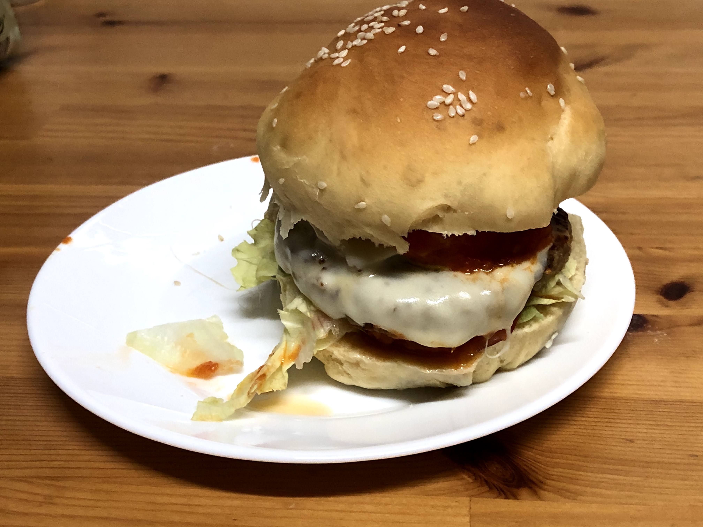

Pão de hambúrguer

Ingredientes
- 90 ml de água
- 90 ml de leite
- 30 ml de azeite
- 2 ovos
- 1/2 colher (sopa) de sal
- 3 colheres (sopa) de açúcar
- 500 g de farinha
- 1/2 colher (sopa) de fermento biológico seco
Modo de preparo
- Misturar todos os ingredientes, sovar e deixar fermentar.
- Modelar em bolinhas (90 g) e voltar a fermentar.
- Assar a 180º C por 25 a 30 minutos.
Na máquina de pão misturar, sovar e fazer a primaeira fermentação. Assar em forno para ficar mais fofo.